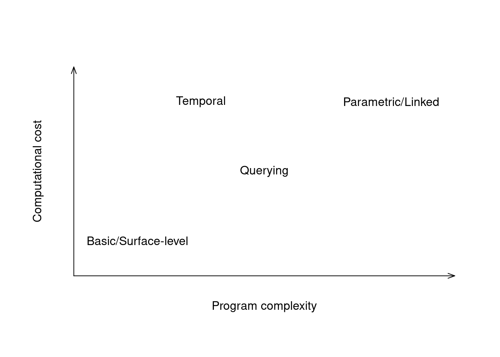

Chapter 2 Literature Review
Interactive data visualization is becoming more and more popular. Interactive figures appear everywhere, from news articles, to business-analytic dashboards, to science communication outlets such as journal websites and personal blogs. Yet, while data scientists and researchers may use interactive visualizations to present their findings, they rarely use them to explore their data and come up with the findings in the first place (Batch and Elmqvist 2017). This seems like a great wasted opportunity. Static visualizations are the bedrock of applied research and data science - why should the arguably more effective interactive data visualizations be left behind? To understand the puzzling trend of interactive data visualizations being used for presentation but not exploration, it is important to first lay some theoretical foundations, as well as to outline the broader historical context. Together, these lines of inquiry may provide answers regarding the present state of things as well as directions for the future.
2.1 What is interactivity?
If it looks like a duck, swims like a duck, and quacks like a duck, then it probably is a duck.
[…] The irony is that while the phrase is often cited as proof of abductive reasoning, it is not proof, as the mechanical duck is still not a living duck
Duck Test entry, (Wikipedia 2022)
What is an interactive visualization? Given that interactive visualizations are so widely used, it seems that the answer should be obvious. Unfortunately, this is not the case. When researchers and applied practitioners use the term “interactive visualization”, they tend to refer to many different things across many different context. As such, it is imperative to clarify what the term “interactive” means, both within the existing literature and the present thesis.
Firstly, it is necessary to disambiguate “interactive visualization” as a noun, a concrete thing or object, as opposed to “interactive visualization” as a verb, a process or an action undertaken by a human being. Pike et al. (2009) note that “interaction” is an overloaded term that can refer to either the concrete set of tools through which users manipulate the visual information or to the more abstract “human interaction with information” - the back-and-forth between the user and the visual information presented to them (see also Yi et al. 2007). Which definition is used depends largely on the field: statisticians and computer scientists tend to talk about interactive visualizations as nouns, whereas researchers in the fields of cognitive science and human-computer interaction tend to emphasize interactive visualization as a verb. While the cognitive aspect of humans interacting with visual information is certainly interesting, I will mainly use the noun definition of interactive visualization, that is, for the purpose of this thesis, interactive visualizations are objects that (typically) live on the computer screen.
Yet, even if we narrow the focus on interactive visualizations as objects, a lot of the conceptual ambiguity remains. Some researchers define interactive visualizations very broadly, for example, as any visualizations can be actively manipulated by the user (Brodbeck, Mazza, and Lalanne 2009). To others, the key measure of interactivity is time, or rather, the lag between the user’s input and changes to the visualization, with less lag meaning more interactivity (Becker and Cleveland 1987; Buja, Cook, and Swayne 1996). Complicating the matters futher, some of these researchers make the distinction between “interactive” and “dynamic” manipulation, where interactive manipulation happens discretely such as by pressing a button or selecting an item from a drop-down menu, whereas dynamic manipulation happens continuously, in real-time, for example by smoothly moving a slider or by clicking-and-dragging (Rheingans 2002; Jankun-Kelly, Ma, and Gertz 2007).
What these two simple definitions - which I will label the “basic” and “temporal” - have in common is that they impose relatively few restrictions on what kinds of visualizations can be considered interactive. For example, one could argue that if the user has the ability to write and run a code from a command line to generate new graphics, this could be considered interactive visualization, under these expansive definitions.
In contrast, other researchers consider the category of “interactive visualizations” to be much more narrow. For many, the defining features are the ability to query different parts of the dataset (by e.g. zooming, panning, and filtering), and reactive propagation of changes between connected or “linked” parts of the visualization (Kehrer et al. 2012; Buja, Cook, and Swayne 1996; Keim 2002; Unwin 1999). Similarly, in Visual Analytics (VA) research, a distinction is made between “surface-level” (or “low-level”) and “parametric” (or “high-level”) interactions, where surface-level interactions manipulate attributes of the visual domain only (e.g. zooming and panning), whereas parametric interactions manipulate attributes of mathematical models or algorithms underlying the visualization Pike et al. (2009).
These more complex definitions of interactivity - which I will label “querying”, “linked”, and “parametric”, respectively - can be used to classify considerably more complex objects. Specifically, while some of the querying interactions like zooming and panning can be implemented by manipulating graphical attributes of the visualization only, linked and parametric interactions require special underlying data structures and systems in all but the most simple examples.
To sum up, researchers use the term “interactive visualization” in many different, often fundamentally disparate ways. Below, in Table 2.1, I have attempted to summarize the main types of interactivity of data visualizations. This list is not supposed to be exhaustive as more complete and detailed taxonomies of interactive visualizations have been described (see Yi et al. 2007). Instead, the point of this list is to provide a rough sketch of the space interactive visualizations live in:
| Type | Short definition | Details |
|---|---|---|
| Basic | Change happens | The user can interact with the visualization in some way |
| Temporal | Change happens “in real-time” | There is little lag between the user’s interactions and changes to the visualization, real-time change is sometimes called dynamic. |
| Querying | Change results from querying different parts of the dataset | The user can query different parts of the dataset by interacting with the visualization, analogous to subsetting rows of the data (e.g. zooming, panning, and filtering) |
| Linked | Change propagates | Parts of the visual display are connected or “linked”, such that the user’s interaction with one part of the visualization produces a change in another (e.g. linked brushing) |
| Parametric | Change affects parameters of underlying models | The user can manipulate the underlying mathematical structure behind the visualization, not just its surface-level graphical attributes |
| (Cognitive) | Change is perceived by a human being | There is a back-and-forth between the visual information being presented and the user’s cognition, insights are generated |
Using the term “interactive” to cover such a wide range of visualizations necessarily leads to ambiguity. For example, imagine we have a single scatterplot. The user can click-and-drag on this scatterplot to highlight certain points (i.e. brush). Should this scatterplot be considered “interactive”?
Under the most basic definition, yes, since the user can affect the visualization through interaction. However, some researcher may not be satisfied with that and may ask us to tell them whether the visualization meets linked or parametric defition of interactivity. With only a single plot, there’s nowhere for our interactions to propagate to, and changing the color of individual points can hardly be considered a change to a mathematical model, so our verdict would then have to be “not interactive”.
What if the researcher was using the temporal definition of interactivity? If the results of the user’s interactions render smoothly enough, we could certainly call the plot interactive. However, what if there is a high volume of data and the user has to wait several hundreds of milliseconds, or even seconds, before the visualization responds to their interaction? Does an interactive visualization stop being interactive as a result of limited computational resources?
As such, even with a simple example of a single interactive scatterplot, many arguments can be made for and against calling it an “interactive visualization”. Importantly, this is not simply an exercise in hypotheticals. The conceptual ambiguity about what visualizations count as interactive has a very real impact on software implementation (see Current-Age Interactive Data Visualization and the Rise of Web Technologies).
library(plotly)
plot_ly(mtcars, x = ~wt, y = ~mpg)Is this an interactive visualization? Depends on who you ask.
It is possible to rank these types of interactivity on different metrics. The most obvious is perhaps the programming and computational complexity: how large codebase and how much computational resources is required implement this type of interactivity? Clearly, the basic or surface-level definition is the least restrictive, and so the simplest and the computationally most cheap interactive visualization systems will be basic. Refering back to the example of the “dubiously interactive” scatterplot, we can implement the highlighting by assigning each point in it a color attribute. Then, whenever the user click-and-drags, all we need to do is to manipulate that color attribute. We do not need to refer back to the data or do any additional computation, and this makes the interaction very cheap. Things get a bit more complicated with temporally interactive visualizations, as there is now the requirement that the visualizations respond fast enough to the user’s interactions. This adds some computational complexity, especially when the data volume is high, however if the interactive action is simple then this can still be done very efficiently. Next, querying interactivity can be somewhat more complex again, since while zooming and panning can be implemented very cheaply by manipulating only the graphical attributes of the visualization (i.e. axis limits) only, filtering requires an additional variable to keep track of which cases in the data are currently filtered. Finally, linked and parametric will usually be the most complex, both programmatically and computationally, as they typically require extra data structures and online computations. However, there is nuance. For example, if we want to implement linked plots that all show one-to-one representations of the cases in the data (e.g. points on a scatterplot), we might be able to get away with a single variable that tracks which cases are selected, similarly to filtering. However, if we also want to include plots with many-to-one representation of the data (e.g. barplot: the count of many cases describes the height of one bar), then we need to be able to compute the relevant summary statistics (height of the bar) on the fly. That is, in addition of having a variable which keeps track of which cases are selected, the plots also need to “remember” how their summary statistics are computed and be able to re-do the computation each time the selection status changes.

Figure 2.1: Programming vs. computational cost of interactive visualization types
Another way to rank the types of interactivity is by their usefulness. I argue that this is inversely proportional to the programming and computational complexity. Parametric and linked interactions are the most useful since they allow the user to get a high-level understanding of the patterns and interactions within the data (Pike et al. 2009; Leman et al. 2013). Being able to ask questions such as: “which bar on a barplot do these points on a scatterplot belong to?” is akin to the conditioning operator in probability, and as such extremely useful. Querying interactions are fairly useful too, since the allow the user to “drill down” and answer questions about specific parts and subsets of the dataset (Dix and Ellis 1998). Temporal interactivity is useful in a “necessary but not sufficient” way, in that a large lag between the user’s input and changes to the graphics renders any kind of interaction moot, but a visualization is not guaranteed to be useful, no matter how smoothly it renders. Finally, basic interaction may add little usefulness above and beyond the static plot that would exist without it.
2.2 Brief History of Interactive Data Visualization in Statistics
Static data visualization has a rich and intricate history, and a full treatment would be beyond the scope of the current thesis (but see e.g. Dix and Ellis 1998; Friendly 2006; Friendly and Wainer 2021; Young, Valero-Mora, and Friendly 2011). Suffice it to say, prior to the second half of the 20th century, data visualization was largely seen as at best secondary to “serious” statistical analysis, although there were indeed some prominent counter-examples (Friendly 2006; Young, Valero-Mora, and Friendly 2011). However, beginning with the end of 1950’s, a series of developments lead to a great increase in prominence of data visualization. Firstly, at the theoretical level, the work of Tukey (1962; 1977) and Bertin (1967) established data visualization as valuable discipline in its own right. Secondly, at the practical level, the development of personal computers (see e.g. Abbate 1999) and high-level programming languages, most notably FORTRAN in 1954 (Backus 1978), introduced powerful and widely available tools that rendered the production of figures near-effortless, in comparison to the earlier hand-drawn techniques. Combined, these developments lead to a surge in the use and dissemination of data visualization.
Interactive visualizations would not be left far behind. Early systems of the 1960’s and 1970’s tended to be specialized for one specific task, such as the one of Fowlkes (1969) which allowed for interactive viewing of probability plots under different choices of parameters and transformations, and that of Kruskal (1965) which visualized multidimensional scaling. The first more general-purpose system was PRIM-9 (Fisherkeller, Friedman, and Tukey 1974), which allowed for exploration of high-dimensional data via projection, rotation, subsetting and masking. The systems that came after grew to be even more general and ambitious. For example, MacSpin (Donoho, Donoho, and Gasko 1988) and XGobi (Swayne, Cook, and Buja 1998) provided features such as interactive scaling, rotation, linked selection (or “brushing”), and interactive plotting of smooth fits in scatterplots, as well as interactive parallel coordinate plots and grand tours (excellent video-documentaries of some of these early interactive data visualization systems are available at ASA Statistical Graphics Video Library).
Later systems saw even greater flexibility and also integration into general statistical computing software. The successor system to XGobi, GGobi (Swayne et al. 2003), expanded on XGobi and made it directly embeddable in R. Mondrian (Theus 2002) built on Java allowed for sophisticated linked interaction between many different types of plots including scatteplots, histograms, barplots, scatterplot, mosaic plots, parallel coordinates plots, and maps. Finally, iPlots (Urbanek and Theus 2003) implemented a general framework for interactive plotting that was not only embedded in R but could be directly programmatically manipulated, and was later further expanded and made performant for big data in iPlots eXtreme (Urbanek 2011).
What all of these interactive data visualization systems had in common is that they were designed by statisticians and with interesting, often ambitious interactive features in mind. Linked selection and brushing, rotation and projection, and interactive manipulation of model parameters made frequent appearances. While being a clear strength, the more complex nature of the systems may have also slowed down their adoption, as they often demanded greater and more specialized expertise.
2.3 Current-Age Interactive Data Visualization and the Rise of Web Technologies
The developments of interactive visualization within the field of statistics were mirrored by similar developments coming from the field from Computer Science. Most relevantly, the rise of Web technologies the mid 1990’s, and more specifically the appearance of JavaScript in 1995 as a high-level general-purpose programming language for the Web (for a thorough description of the history, see e.g. Wirfs-Brock and Eich 2020), created an extremely versatile toolbox for highly-reactive and portable applications. That is, JavaScript was created with the explicit purpose of making websites interactive, and the fast dissemination of robust and standardized web browser software meant that interactive websites could be viewed by anyone, from anywhere. Interactive data visualization became just one of many interactive technologies highly sought after within the fledgling Web ecosystem. Early systems such as Prefuse in 2005 (Heer, Card, and Landay 2005) and Flare in 2008 (“Flare \(\vert\) Data Visualization for the Web” 2020) relied on plugins, specifically Java and Adobe Flash Player, respectively.
In the late 2000’s and early 2010’s, several true Web-native interactive data visualization systems emerged. The most prominent among these is D3.js (Bostock 2022), a broad and general JavaScript framework for manipulating HTML documents using data and displaying it with visualizations. D3.js visualizations rendered as scalable vector graphics (SVG), meaning that they are lossless and retain a crisp look even when resized. However, a price to pay for this robustness is in performance, as visualizations can become slow to render at high data volumes. D3.js spawned a number of smaller, more specialized data visualization packages, such as plotly.js (Plotly Inc. 2022). Another popular JavaScript library for interactive visualizations is Highcharts (“Interactive javascript charts library” 2022). Like D3.js, Highcharts visualizations are also rendered in SVG by default, although there are also more performant rendering technologies based on WebGL available (“Render millions of chart points with the Boost Module Highcharts” 2022).
While these contemporary Web-based interactive data visualization systems offer great deal of flexibility and customizability, I argue that this comes at the cost of making them practical for applied researchers and data scientists. Most importantly, it seems that the conceptual ambiguity about what counts as “interactive visualization” described in Chapter 2.1 has propagated into the implementation. For example, in the R Graph Gallery entry on Interactive Charts (Holtz 2022), which features several examples of interactive visualization derived from the above-mentioned JavaScript interactive data visualization libraries, the visualizations feature interactions such zooming, panning, hovering, 3D rotation, and node repositioning within a network graph. However, in all of the examples, the user only affect surface-level graphical attributes of a single plot, and so these visualizations do not meet the linked and parametric definitions of interactivity. In contrast, the Plotly Dash documentation page on Interactive Visualizations (Plotly Inc. 2022) does feature two examples of linked hovering and cross-filtering, i.e. examples of linked interactivity. However, it should be noted that vast majority of visualizations in the Plotly R Open Source Graphing Library documentation page (Plotly Inc. 2022) allow for only surface-level interactions. Similarly, VegaLite Gallery pages on Interactive Charts and Interactive Multiview Displays (Vega Project 2022) feature many examples, however, only a few show limited examples of linked or parametric interactivity. Finally, the Highcharter Showcase Page (Kunst 2022) does not feature any examples of linking or parametric interactivity.
What all of the packages listed above have in common is that most featured interaction is typically surface-level and takes place within a single plot, and the few examples that feature interesting types of interactivity (linked or parametric) often require a complicated setup. The main reason for this is most likely that all of these packages have been designed to be very general-purpose and flexible, and the price to pay for this flexibility is that complex types of interactivity require complex code. Another reason is that these packages have been built for static visualizations first, and interactivity second. Further, since all of these packages are native to JavaScript, the expectation may be that if more interesting types of interactivity are desired, the interactive “back-end” may be written separately, outside of the package. Finally, the typical use case for these packages seems to be presentation, not EDA.
Be it as it may, there is a fairly high barrier for entry for creating interesting types of interactivity (i.e. linked or parametric) with these packages. This may not be an issue for large organizations which can afford to hire computer science specialists to work on complex interactive dashboards and visualizations full-time. However, to the average applied scientist or data scientist, the upfront cost of producing a useful interactive data visualization may be too high, especially if one is only interested in exploratory data analysis for one’s own benefit. This may be the reason why interactive visualizations are nowadays mainly used for data communication, not data exploration (Batch and Elmqvist 2017). On a higher level, the current options for interactive data visualization may reflect a broader cultural differences between Computer Science and Statistics, where Computer Science may be more oriented towards business and large-team collaboration, whereas Statistics may be more focused on applied research and individual/small-team workflow.
2.4 Interactive Visualization as Reactive Data Processing
An alternative way of conceptualizing interactive data visualizations is as a visual interface to a reactive data processing system. Reactive data processing is an important topic in relational database research and has been known under many different names including dynamic cross-tabulations, pivot tables, and Online Analytical Processing (OLAP). In essence, reactive data processing is about taking multi-dimensional data and reducing it to a set of summary values based on .
2.5 The Relationship Between Data, Statistical Summaries, and Graphics
A key issue in the design and production of statistical graphics is the relationship between statistical summaries of the data and their visual representation. The “naive” or “essentialist” view is a tight coupling between the summaries and graphics. For example, we might start out assuming that, whenever we see a plot, any and all points we see always display raw XY values of some variables (scatterplot), bars display counts (barplot), boxes with whiskers display quantiles (boxplot), etc… As such, there is no clear separation between the statistical summaries computed from the data and the way they are drawn. Going further, we could extend this rigid, essentialist view all the way to the data: “the natural thing to do with a categorical variable is to summarize counts, and the natural thing to do with counts is to draw a barplot”. Through this lens, the data and the graphic are really the same thing under the hood - a categorical variable is counts is barplot - and all choice in visualization is just about decoration.
Yet, even among the few most common plot types, a perfect one-to-one correspondence between statistical summaries and graphics does not exist. Bars are, for example, used to draw both counts in barplot and binned frequencies in a histogram. This is where the essentialist view falters, and the need to introduce more expansive frameworks begins to be felt. Wilkinson, building on the earlier work of Bertin (1967) and Tukey (1977), revolutionized data visualization by introducing his Grammar of Graphics (Wilkinson 2012).